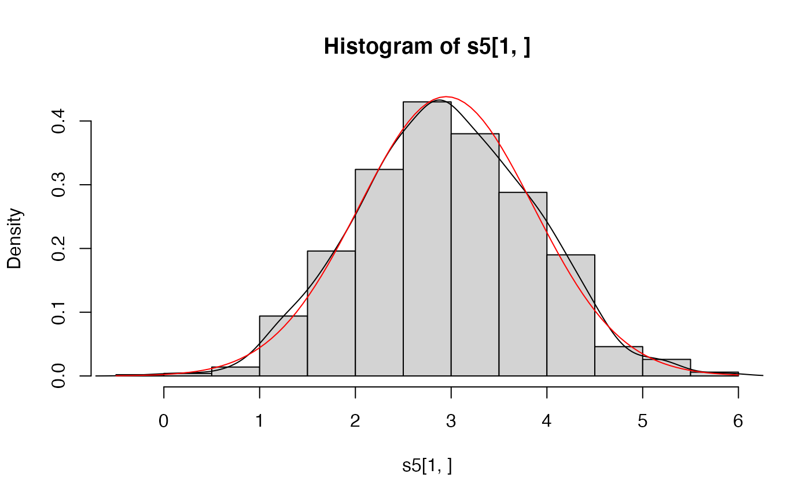

Perform simulation experiments
simuExperiment.RdPerform simulation experiments
Usage
simuExperiment(model, simu, est, N = 100, use_true = FALSE,
raw = FALSE, init_name = "init", keep = identity,
summary_fun = .fsummary, ...)Arguments
- model
the model, see 'Details'.
- simu
arguments for the simulation function, a list, see 'Details'.
- est
arguments for the estimation function, a list, see 'Details'.
- N
number of simulations.
- use_true
if TRUE, use also the "true" coefficients as initial values, see 'Details'.
- raw
if TRUE, include the list of estimated models in the returned value.
- init_name
name of the argument of the estimation function which specifies the initial values for estimation, not always used, see `Details'.
- keep
what values to keep from each simulation run, a function, see 'Details'.
- summary_fun
A function to apply at the end of the experiment to obtain a summary, see 'Details'.
- ...
additional arguments to pass on to the summary function. NOTE: this may change.
Details
Argument model specifies the underlying model and is not always
needed, see the examples.
Argument simu specifies how to simulate the data.
Argument est specifies the estimation procedure.
Argument N specifies the number of simulation runs.
The remaining arguments control details of the simulations, mostly
what is returned.
Basically, simuExperiment does N simulation-estimation
runs.
The keep function is applied to the value obtained from each
run.
The results from keep are assembled in a list (these are the
'raw' results).
Finally, the summary function (argument summary_fun) is applied
to the raw list.
simu and est are lists with two elements: fun and
args. fun is a function or the name of a
function. args is a list of arguments to that function. The
first argument of the estimation function, est$fun, is the
simulated data. This argument is inserted by simuExperiment and
should not be put in est$args.
The value returned by the summary function is the main part of the
result. If raw = TRUE, then the raw list is returned, as well.
Further fields may be made possible through additional arguments but
'Summary' and 'Raw' are guaranteed to be as described here.
simuExperiment uses init_name only if use_true is
TRUE to arrange a call of the estimation function with initial value
model. Obviously, simuExperiment does not know how (or
if) the estimation function does with its arguments.
The function specified by argument keep is called with one
argument when use_true is FALSE and two arguments otherwise.
Value
A list with one or more elements, depending on the arguments.
- Summary
a summary of the experiment, by default sample means and standard deviations of the estimates.
- Raw
A list of the estimated models.
Examples
## explore dist. of the mean of a random sample of length 5.
## (only illustration, such simple cases hardly need simuExperiment)
sim1 <- list(fun="rnorm", args = list(n=5, mean=3, sd = 2))
est1 <- list(fun=mean, args = list())
# a basic report function
fsum1 <- function(x){ wrk <- do.call("c",x)
c(n = length(wrk), mean = mean(wrk), sd = sd(wrk))}
a1 <- simuExperiment(TRUE, simu = sim1, est = est1, N = 1000, summary_fun = fsum1)
# explore also the dist. of the sample s.d.
est2 <- est1
est2$fun <- function(x) c(xbar = mean(x), s = sd(x))
a2 <- simuExperiment(TRUE, simu = sim1, est = est2, N = 1000)
# keep the raw sample means and s.d.'s for further use
a2a <- simuExperiment(TRUE, simu = sim1, est = est2, N = 1000, raw = TRUE)
a2a$Summary
#> $mean
#> xbar s
#> 2.948814 1.872527
#>
#> $sd
#> xbar s
#> 0.9103828 0.6603736
#>
#> $N
#> [1] 1000
#>
# replicate a2a$Summary
s5 <- sapply(a2a$Raw, identity)
apply(s5, 1, mean)
#> xbar s
#> 2.948814 1.872527
apply(s5, 1, sd)
#> xbar s
#> 0.9103828 0.6603736
hist(s5[1,], prob=TRUE)
lines(density(s5[1,]))
curve(dnorm(x, mean(s5[1,]), sd(s5[1,])), add = TRUE, col = "red")

mixAR:::.fsummary(a2a$Raw)
#> $mean
#> xbar s
#> 2.948814 1.872527
#>
#> $sd
#> xbar s
#> 0.9103828 0.6603736
#>
#> $N
#> [1] 1000
#>
mixAR:::.fsummary(a2a$Raw, merge = TRUE)
#> $mean
#> xbar s
#> 2.948814 1.872527
#>
#> $sd
#> xbar s
#> 0.9103828 0.6603736
#>
#> $merged
#> mean sd
#> xbar 2.948814 0.9103828
#> s 1.872527 0.6603736
#>
#> $N
#> [1] 1000
#>